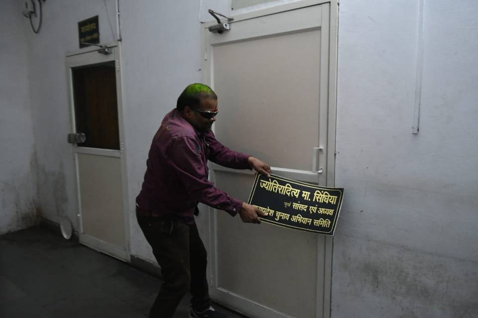
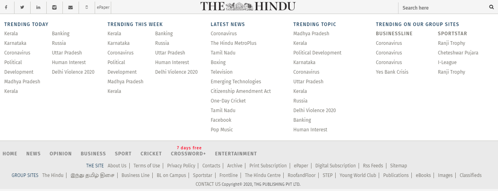

Madhya Pradesh political crisis: 21 Congress MLAs tender resignation


Jyotiraditya Scindia met Prime Minister Narendra Modi and Home Minister Amit Shah, rising speculations that he might join BJP.
Congress has expelled disgruntled party leader from Madhya Pradesh Jyotiraditya Scindia for "anti-party activities". Meanwhile, Mr. Scindia said he has resigned from the primary membership of Congress. Congress president has approved the expulsion of Sh. Jyotiraditya Scindia from the Indian National Congress with immediate effect for anti-party activities, party's general secretary K.C. Venugopal said. The resignation letter of Mr. Scindia, dated March 9, 2020 and addressed to party president Sonia Gandhi, stated "this was a path that has been drawing itself out over the last year."